On this page
- Part 0 · Your handoff note
- Stop 1 · The pipeline is red at Build
- Stop 2 · Still red at Build — but your commands all passed
- Stop 3 · Build is green, Deploy is red — instantly
- Stop 4 · Deploy red again — now it takes 30 seconds to fail
- Stop 5 · Deploy red — this time it is your script
- Stop 6 · All green! …open the website
- Debrief · fill in the tracker, then answer these
- Challenges
- Clean up
- What you learned
Your number. Your environment is named cicd-lab3-participant-NN-…. Everything you touch must contain your NN. Fifteen identical environments exist side by side: if you edit someone else's deployment group, you break their lab and learn nothing about yours.
Region: US West (Oregon) · us-west-2.
Part 0 · Your handoff note
The instructor will share a table like this (yours has your own values):
| Student | Pipeline | Web URL | Bucket |
|---|---|---|---|
| participant-NN | cicd-lab3-participant-NN-pipeline |
http://<your instance public IP>/ |
cicd-lab3-participant-NN-962804699607 |
Everything in your environment follows the pattern cicd-lab3-participant-NN-<thing>:
| Thing | Name | Purpose |
|---|---|---|
| S3 bucket | cicd-lab3-participant-NN-962804699607 |
holds source/app.zip (the pipeline's input) and the pipeline's intermediate artifacts |
| Pipeline | …-pipeline |
Source (S3) → Build (CodeBuild) → Deploy (CodeDeploy). Polls S3; every new source/app.zip starts a run |
| CodeBuild project | …-build |
runs buildspec.yml from the zip: stamps the build number into index.html, packages the artifact |
| CodeDeploy app / group | …-app / …-group |
deploys the artifact to EC2 instances selected by tag |
| EC2 instance | …-web |
Amazon Linux 2023, CodeDeploy agent pre-installed, port 80 open. Apache is not installed yet; a hook will do that |
| IAM roles | …-codebuild-role, …-codedeploy-role, …-ec2-role, …-codepipeline-role |
one per robot (Lab 2!) |
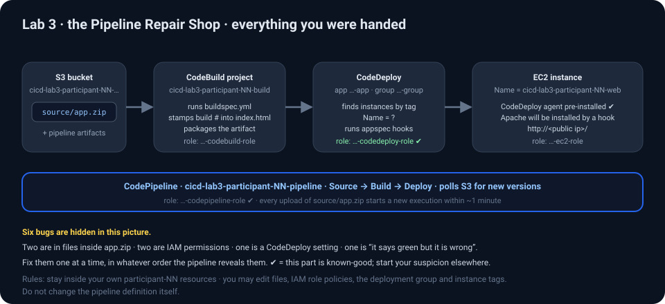
In the console the class looks like this: fifteen pipelines, all red, one of them yours.
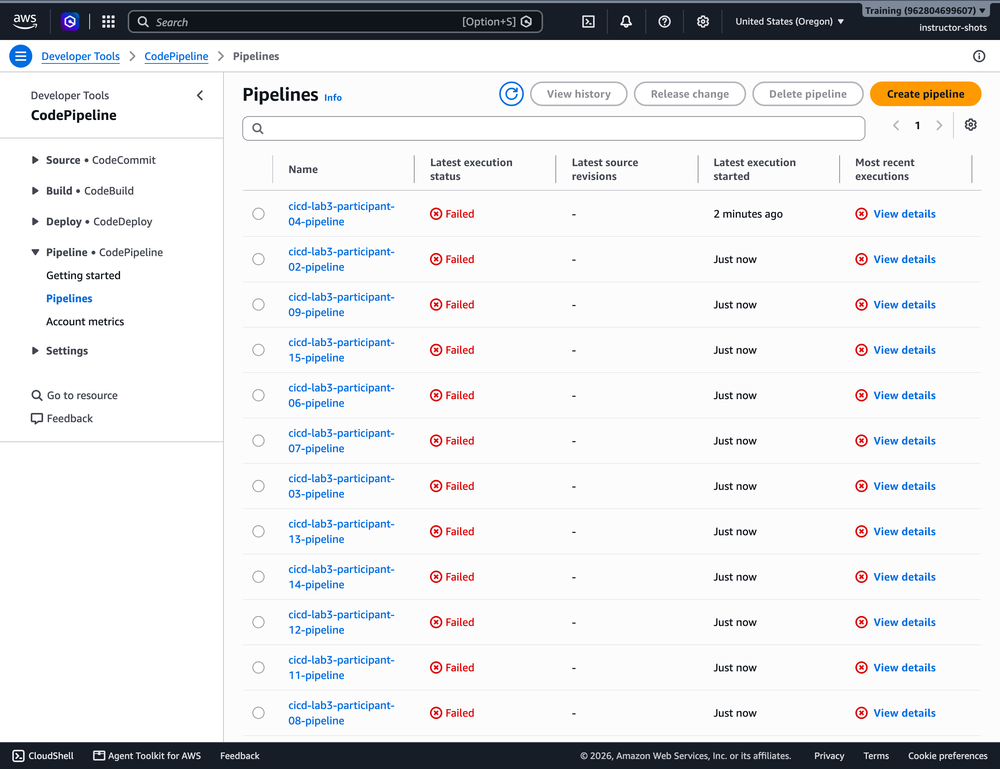
The app you are deploying
Download it now: S3 → your bucket → source/ → app.zip → Download. Unzip it somewhere you can edit.
app/
├── appspec.yml ← CodeDeploy instructions (files + hooks)
├── buildspec.yml ← CodeBuild recipe
├── index.html ← the page; contains __BUILD_ID__ and __BUILD_TIME__ placeholders
└── scripts/
├── install_dependencies.sh ← BeforeInstall
├── start_server.sh ← ApplicationStart
└── stop_server.sh ← ApplicationStop
When everything works, the page says "You fixed the pipeline!" with a real build number and timestamp stamped in by CodeBuild.
Rules of engagement
- Fix one thing, re-run, observe. Never change two things between runs; you will not know which one mattered.
- You may change: the files inside
app.zip(edit → re-zip → upload tosource/app.zip), the policies on your IAM roles, your deployment group, and tags on your instance. - You may not change: the pipeline's stages, the CodeBuild project settings, anyone else's anything.
- Three ways to re-run, fastest first:
- Retry stage – the ↻ icon on the red stage card → Retry failed actions. Use after IAM or deployment-group fixes (nothing in the zip changed).
- Release change (top-right) – re-runs the whole pipeline with the latest
source/app.zip. - Upload a new
app.zip– the pipeline notices on its own within about a minute. Use after file fixes.
- Write it down. Keep the bug tracker below; the debrief uses it.
Your bug tracker
| # | Symptom (what was red, what it said) | Which robot / which file | Root cause | Fix |
|---|---|---|---|---|
| 1 | ||||
| 2 | ||||
| 3 | ||||
| 4 | ||||
| 5 | ||||
| 6 |
Triage playbook (keep this open)
| Where it is red | Open this | Look for |
|---|---|---|
| Build | CodeBuild build → Phase details → first red phase → Build logs | Your commands' output; a COMMAND_EXECUTION_ERROR; or an AccessDenied after your commands |
| Deploy, fails within seconds | CodeDeploy deployment page → red banner | "no instances were found" → tags |
| Deploy, fails after ~30 s | Deployment page → What failed → event name | DownloadBundle → the instance's permissions. BeforeInstall / ApplicationStart → your scripts (read the log tail) |
| All green, site wrong | The artifact: build log "Found N file(s)", the BuildArtif/…zip in your bucket, or ls /var/www/html on the server |
What was shipped versus what you meant to ship |
🔍 How to look inside the server (Session Manager, no SSH)
EC2 → Instances → cicd-lab3-participant-NN-web → Connect → Session Manager → Connect. Useful commands:
sudo systemctl status codedeploy-agent --no-pager # is the agent alive?
sudo tail -n 30 /var/log/aws/codedeploy-agent/codedeploy-agent.log
sudo ls /opt/codedeploy-agent/deployment-root/ # one folder per deployment
ls -la /var/www/html/ # what did the last deployment put here?
systemctl is-active httpd # is Apache running?
Stop 1 · The pipeline is red at Build
Open your pipeline. Source is green, Build is red, Deploy "didn't run".
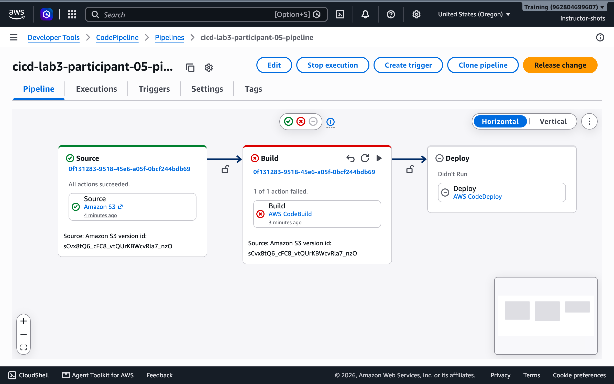
Click AWS CodeBuild inside the Build card (or go CodeBuild → Build projects → your project → the latest build).
Investigate: Which phase failed? What exact command was CodeBuild running? Compare it to what is written in buildspec.yml.
💡 Hint 1 — the phase and the message
Phase details shows two red phases: BUILD and, further down, UPLOAD_ARTIFACTS. The triage rule is always fix the first red phase first: later failures are often consequences, and if they are not, they will still be there on the next run. BUILD's context says: Error while executing command: grep -q "Build. Reason: exit status 2. Look at that command carefully. Does it look complete to you?
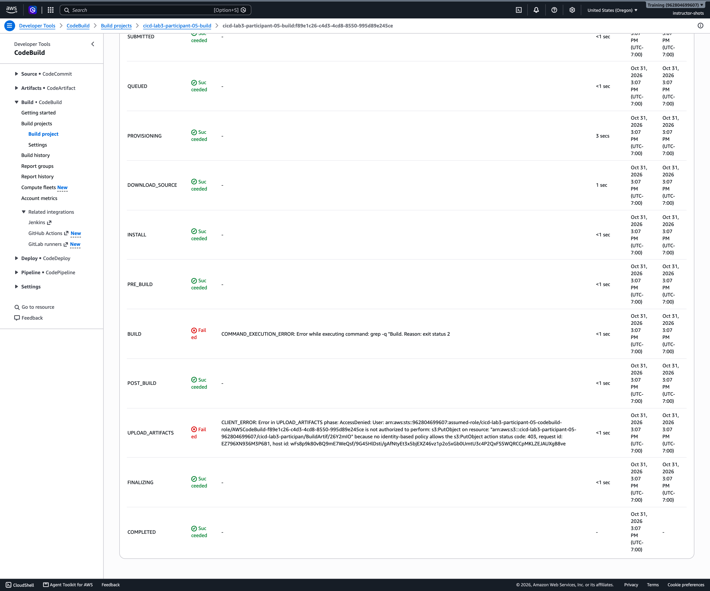
💡 Hint 2 — the log
In Build logs:
Running command grep -q "Build
/codebuild/output/tmp/script.sh: line 4: unexpected EOF while looking for matching `"'
Command did not exit successfully grep -q "Build exit status 2
The shell got a command that starts a quote and never closes it. In buildspec.yml the line is
- grep -q "Build #${CODEBUILD_BUILD_NUMBER}" index.html
Everything after a certain character vanished before the shell ever saw it. Which character?
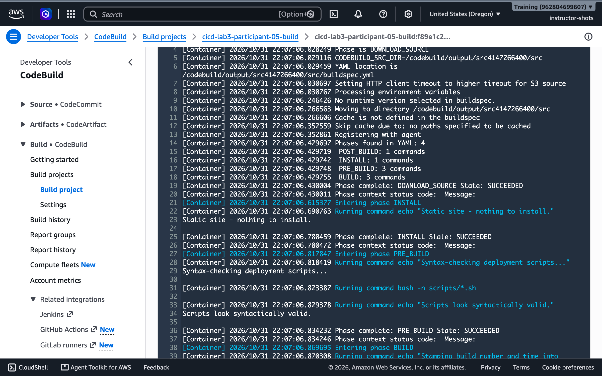
💡 Hint 3 — it is not a shell problem
buildspec.yml is YAML, and in YAML a # preceded by a space begins a comment. The YAML parser threw away #${CODEBUILD_BUILD_NUMBER}" index.html as if it were a note to humans, and handed CodeBuild the fragment grep -q "Build. The bash -n syntax check in pre_build could never catch this: it checks the shell scripts, not the YAML.
✅ Solution
Quote the whole command so YAML treats it as one string (single quotes are simplest; the double quotes inside are then fine):
build:
commands:
- echo "Stamping build number and time into index.html..."
- sed -i "s/__BUILD_ID__/${CODEBUILD_BUILD_NUMBER}/; s/__BUILD_TIME__/$(date -u +%Y-%m-%dT%H:%M:%SZ)/" index.html
- 'grep -q "Build #${CODEBUILD_BUILD_NUMBER}" index.html'
Re-zip from inside the app/ folder so the files stay at the top level:
zip -r app.zip appspec.yml buildspec.yml index.html scripts/
Upload to S3 → your bucket → source/ → replace app.zip. Within a minute a new execution starts.
Bug 1 — the YAML comment trap. Characters that are harmless in a shell (#, :, {) have meaning in YAML. When a logged command looks shorter than what you wrote, suspect the YAML layer, not the tool. Prevention: quote any command containing # or : , and keep an eye on the build log's "Running command …" lines, which show exactly what survived parsing.
Stop 2 · Still red at Build — but your commands all passed
The new run gets further. Build is red again, but this time BUILD itself is green: the log shows "Stamping build number…" ran and the grep passed. The second red phase from Stop 1 is still there, and it is now the first one.
Investigate: Which phase is red now? Is it one of yours? Read the error like a sentence: who is not authorized to do what on which resource?
💡 Hint 1 — a phase you did not write
Phase details: every phase you control (INSTALL, PRE_BUILD, BUILD, POST_BUILD) is green. The red one is UPLOAD_ARTIFACTS – CodeBuild's own step that pushes the output zip to the pipeline's artifact store.
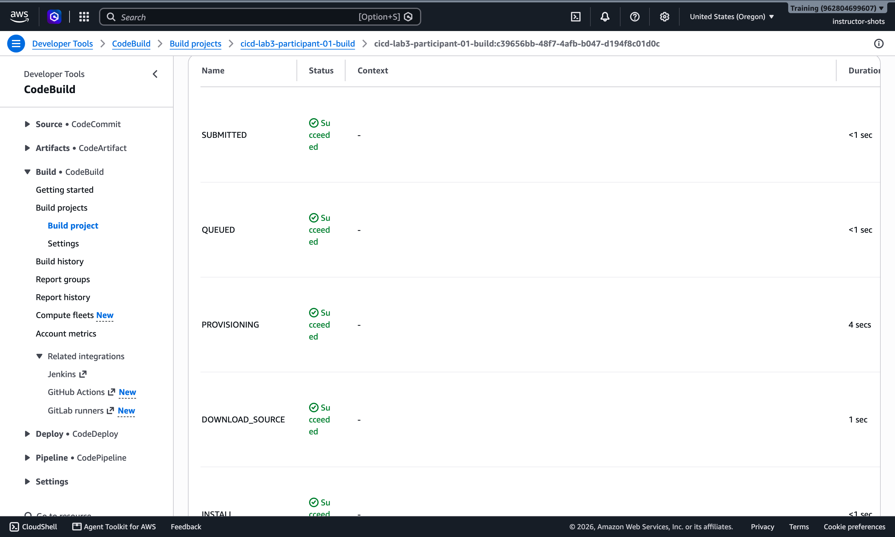
💡 Hint 2 — read the sentence
Error in UPLOAD_ARTIFACTS phase: AccessDenied:
User: arn:aws:sts::962804699607:assumed-role/cicd-lab3-participant-NN-codebuild-role/AWSCodeBuild-…
is not authorized to perform: s3:PutObject
on resource: "arn:aws:s3:::cicd-lab3-participant-NN-962804699607/cicd-lab3-participan/BuildArtif/…"
because no identity-based policy allows the s3:PutObject action
- Who: the CodeBuild role (robot #1 from Lab 2's roles map).
- What:
s3:PutObject– writing to S3. - Where: your own bucket.
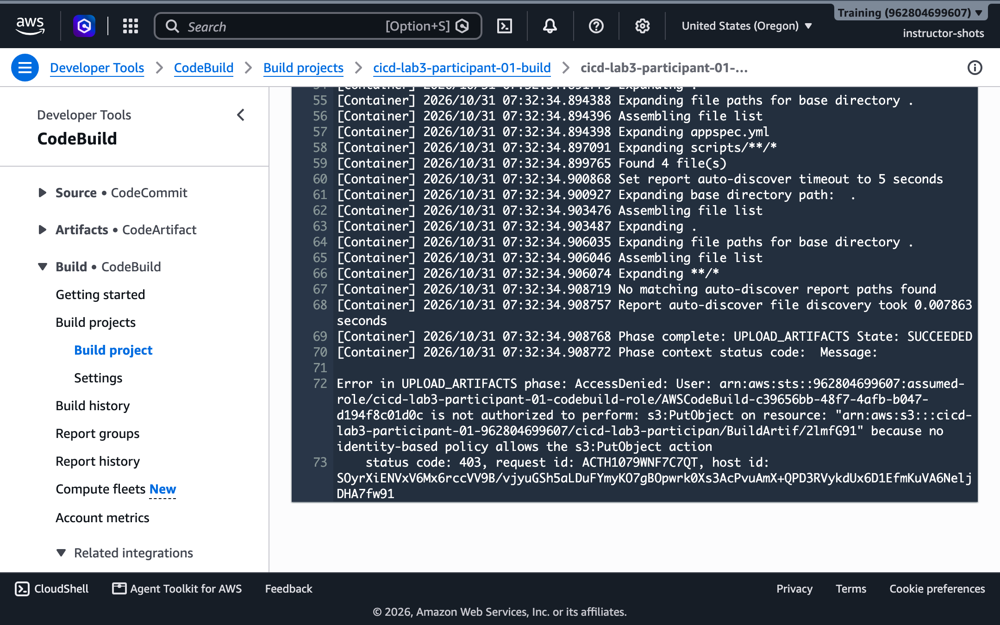
So the build may read its source but may not write its result. Go look at that role.
💡 Hint 3 — the policy
IAM → Roles → cicd-lab3-participant-NN-codebuild-role → its one inline policy → view the JSON. Compare the list of s3: actions against the action named in the error.
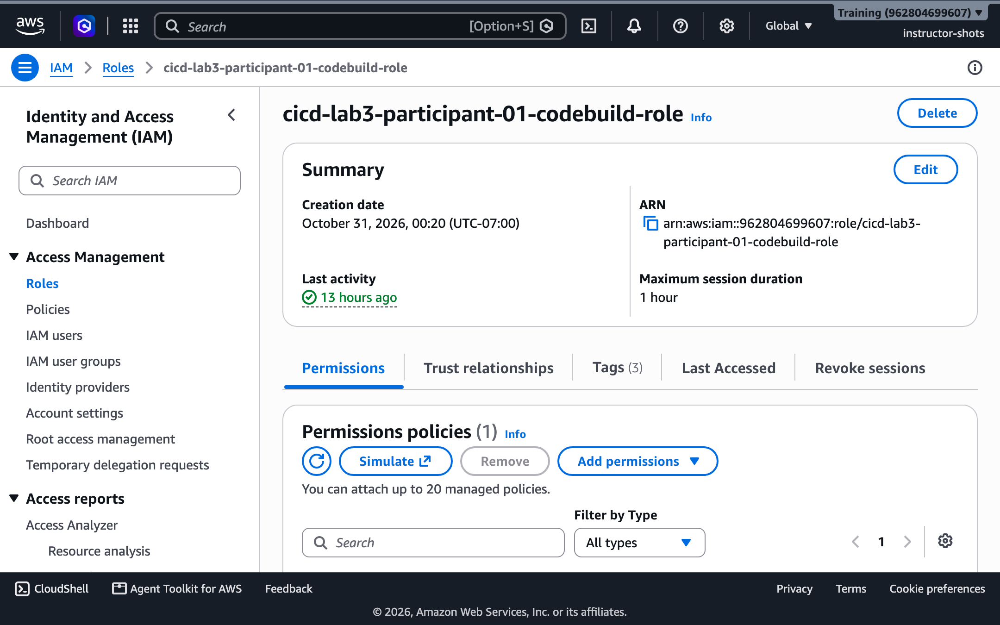
✅ Solution
Edit the inline policy (IAM → role → policy → Edit → JSON) and add s3:PutObject to the statement that already lists the S3 read actions:
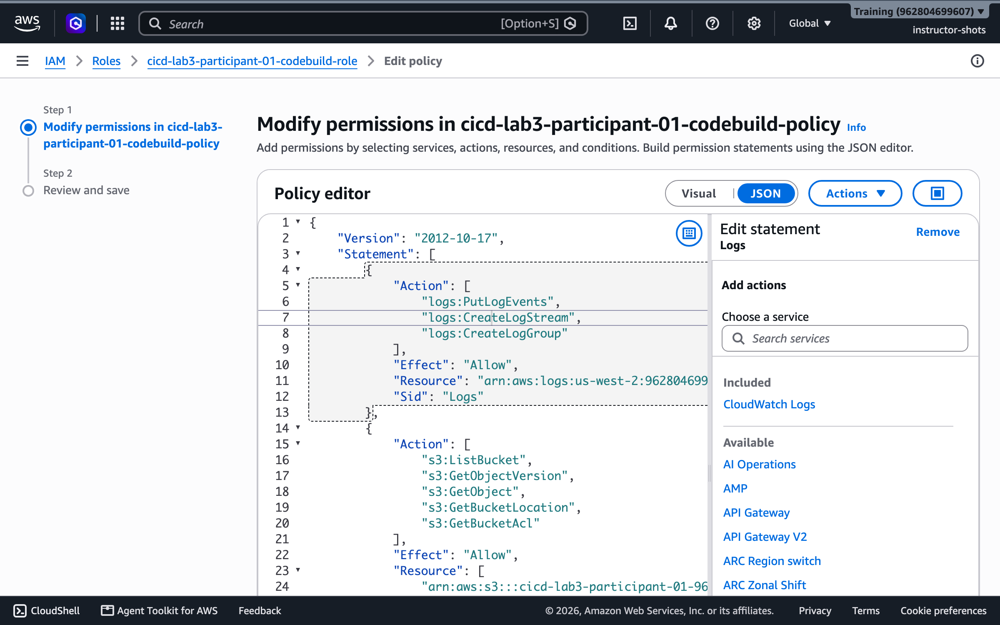
{
"Sid": "ReadArtifacts",
"Effect": "Allow",
"Action": [
"s3:GetObject",
"s3:GetObjectVersion",
"s3:GetBucketAcl",
"s3:GetBucketLocation",
"s3:ListBucket",
"s3:PutObject"
],
"Resource": [
"arn:aws:s3:::cicd-lab3-participant-NN-962804699607",
"arn:aws:s3:::cicd-lab3-participant-NN-962804699607/*"
]
}
Save, wait ~15 seconds for IAM to propagate, then on the pipeline click the ↻ on the Build card → Retry failed actions. No need to upload anything: nothing in the zip changed.
(Attaching the AWS-managed AmazonS3FullAccess also "works". It also lets the build delete every object in every bucket in the account. Prefer the one-line fix.)
Bug 2 — the robot could read but not write. A build touches S3 twice: it reads the source and writes the artifact. The error message always names the principal, the action and the resource; those three words are the whole diagnosis. Prevention: role templates per job type, and a test run before handing a pipeline to anyone.
Stop 3 · Build is green, Deploy is red — instantly
Deploy fails in a few seconds. Click the AWS CodeDeploy link in the Deploy card.
Investigate: Read the banner. Then compare two things that are supposed to match.
💡 Hint 1 — the banner says it all
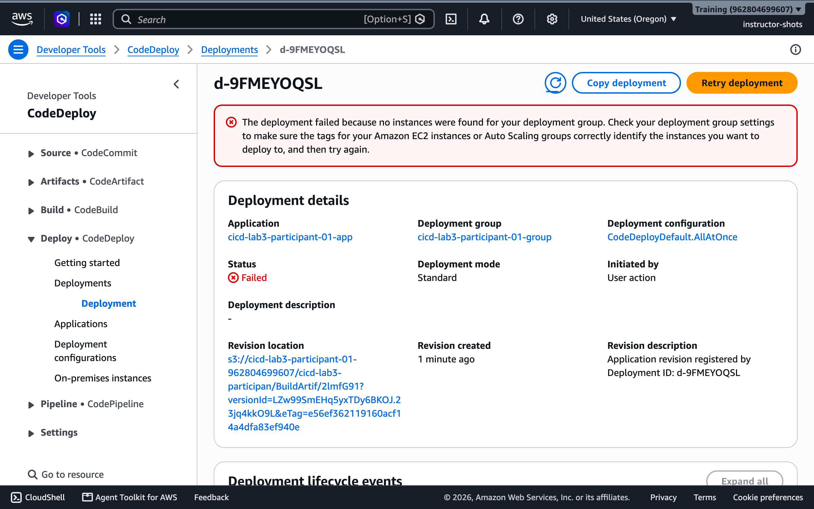
"The deployment failed because no instances were found for your deployment group. Check your deployment group settings to make sure the tags for your Amazon EC2 instances … correctly identify the instances."
Which tag is the deployment group looking for, and what tag does your instance actually carry?
💡 Hint 2 — side by side
Deployment group page → Environment configuration:
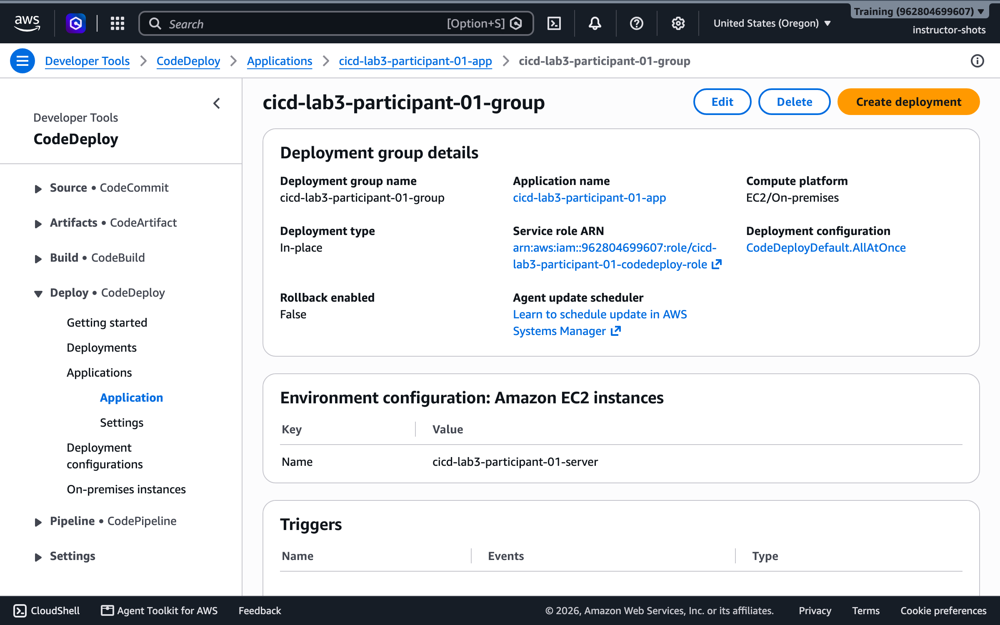
EC2 → Instances → search cicd-lab3-participant-NN:
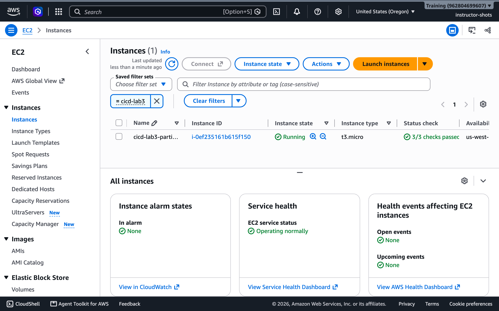
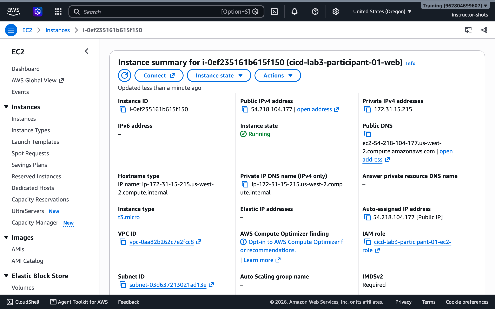
One ends in -server. The other ends in -web.
✅ Solution
Deployment group → Edit → Environment configuration → change the tag Value to cicd-lab3-participant-NN-web. The line under the checkbox should change from 0 to 1 unique matched instance before you save. Save changes, then Retry the Deploy stage.
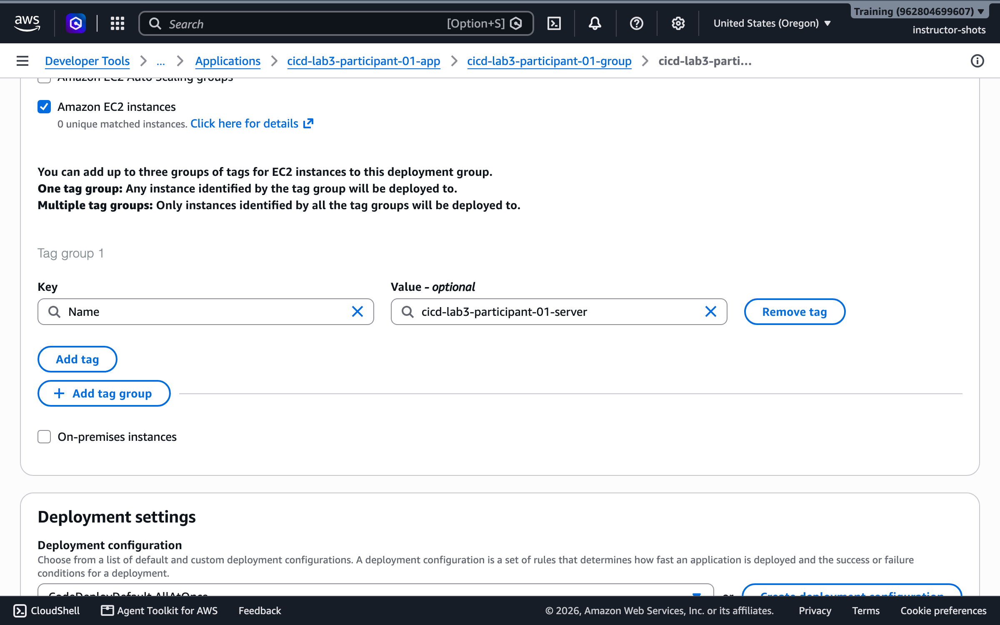
(Re-tagging the instance to …-server would also work. Changing the deployment group is better: the instance tag is the truth that other systems may rely on – billing, monitoring, Terraform.)
Bug 3 — a tag is a contract. CodeDeploy never "knows" your servers; it searches for tags at deployment time. One wrong word = zero matches = instant failure. Prevention: use the console's "N unique matched instances" preview before saving, and let one source (infrastructure code) generate both the tag and the filter.
Stop 4 · Deploy red again — now it takes 30 seconds to fail
Progress: CodeDeploy found the instance and talked to the agent. Then something on the server failed. Open the deployment and read What failed.
Investigate: Which lifecycle event failed? Which identity appears in the error? (Careful: it is not the same robot as Stop 2.)
💡 Hint 1 — the event
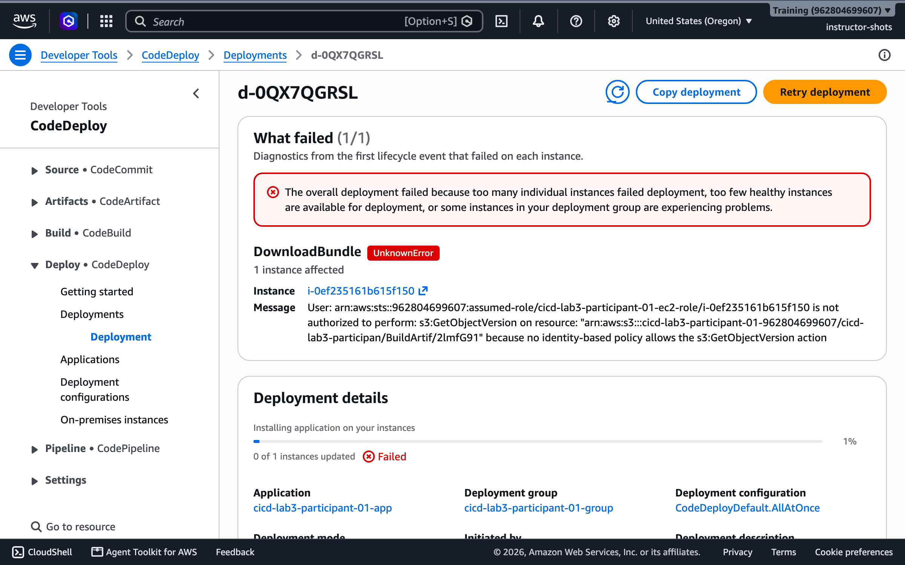
DownloadBundle – the step where the agent on the instance fetches the zip from S3. The hooks after it were skipped.
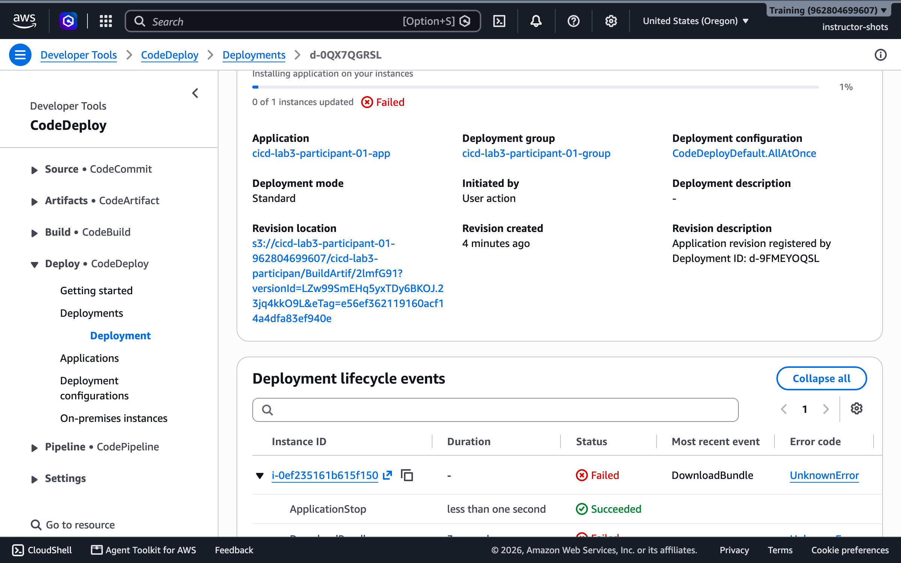
💡 Hint 2 — the sentence, again
User: arn:aws:sts::…:assumed-role/cicd-lab3-participant-NN-ec2-role/i-0123… is not authorized to perform: s3:GetObjectVersion …
The principal is the EC2 instance role (the session name is the instance ID). The agent uses the instance's role for everything it does. Go look at what that role is allowed to do.
💡 Hint 3 — the role
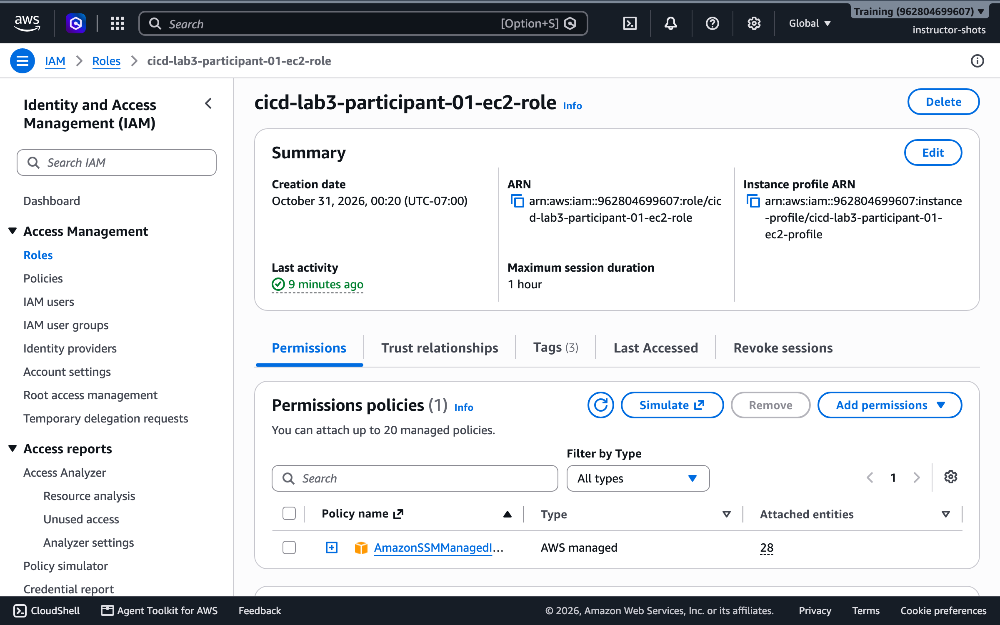
Only AmazonSSMManagedInstanceCore is attached. Nothing about S3. The agent can be reached (Systems Manager) but cannot fetch.
On the server itself, /var/log/aws/codedeploy-agent/codedeploy-agent.log says the same thing:
ERROR [codedeploy-agent]: InstanceAgent::Plugins::CodeDeployPlugin::CommandPoller: Error during perform:
Aws::S3::Errors::AccessDenied - User: arn:aws:sts::…:assumed-role/cicd-lab3-participant-NN-ec2-role/i-… is not authorized to perform: s3:GetObjectVersion …
✅ Solution
IAM → Roles → cicd-lab3-participant-NN-ec2-role → Add permissions → Attach policies → search AmazonEC2RoleforAWSCodeDeploy → tick → Add permissions.
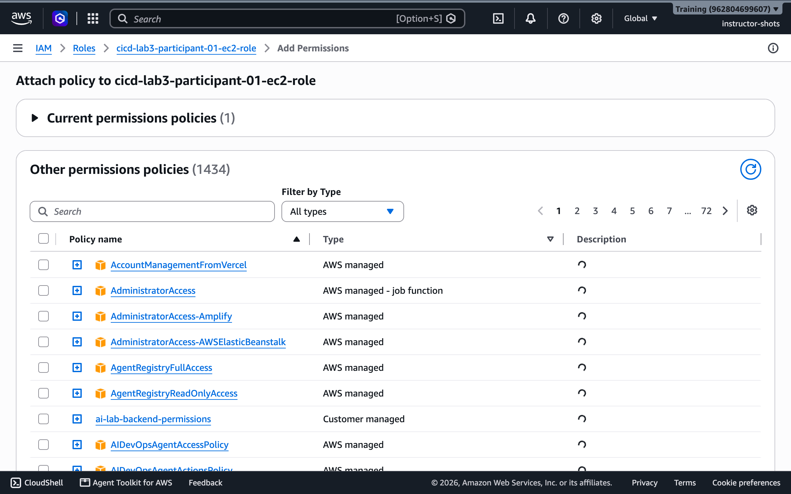
(AmazonS3ReadOnlyAccess also works. Challenge B below asks you to do better than either.)
Wait ~30 seconds – the agent refreshes its credentials automatically; no reboot – then Retry the Deploy stage.
Bug 4 — the third robot. The service (CodeDeploy) had permission; the agent did not. Every "download/fetch/pull" step in a deployment runs with the target machine's identity. Prevention: a standard instance profile for "CodeDeploy targets", and reading the principal in every AccessDenied before touching any policy.
Stop 5 · Deploy red — this time it is your script
The bundle downloaded, Apache got installed, files were copied… and then the deployment failed. Open What failed.
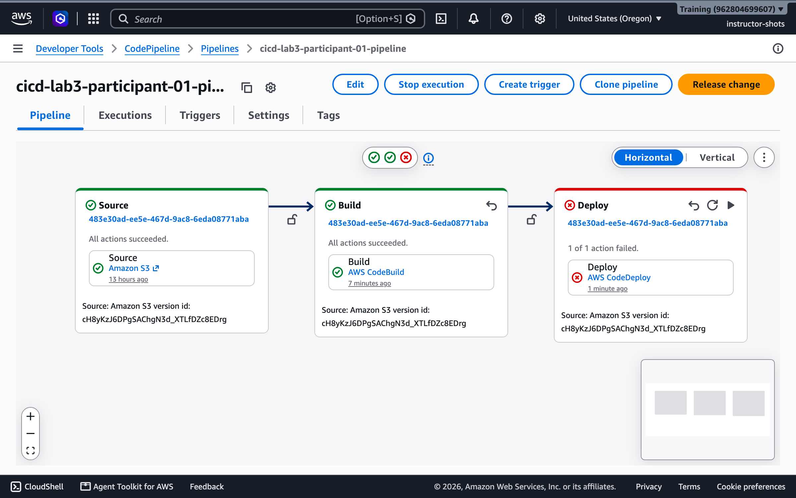
Investigate: Which hook, which script, which line of its output?
💡 Hint 1
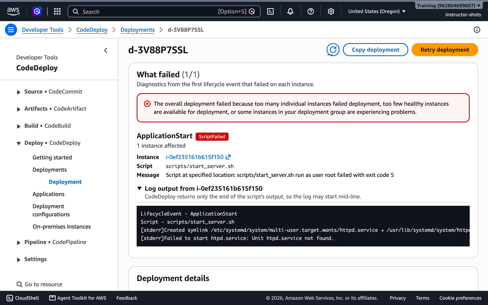
ApplicationStart · ScriptFailed · scripts/start_server.sh … failed with exit code 5. The log tail is right there on the page. Read the last line of it slowly.
💡 Hint 2
Failed to start htpd.service: Unit htpd.service not found. – count the letters in the service name. Then open scripts/start_server.sh in your copy of the zip.
✅ Solution
scripts/start_server.sh says systemctl start htpd. It should say:
systemctl start httpd
Fix it, re-zip, upload source/app.zip. The pipeline runs by itself.
Bug 5 — syntax is not semantics. The build's pre_build phase proudly printed "Scripts look syntactically valid" – bash -n only checks that the script parses, not that it works. A typo in a service name is perfectly valid bash. Prevention: smoke-test the thing the script is supposed to achieve (see Challenge A), and test deployment scripts on a throw-away instance before they reach a pipeline.
Note that your site has been down since Stop 4's fix: Apache was installed but never started. That is the Lab 2 lesson again, from the other side.
Stop 6 · All green! …open the website
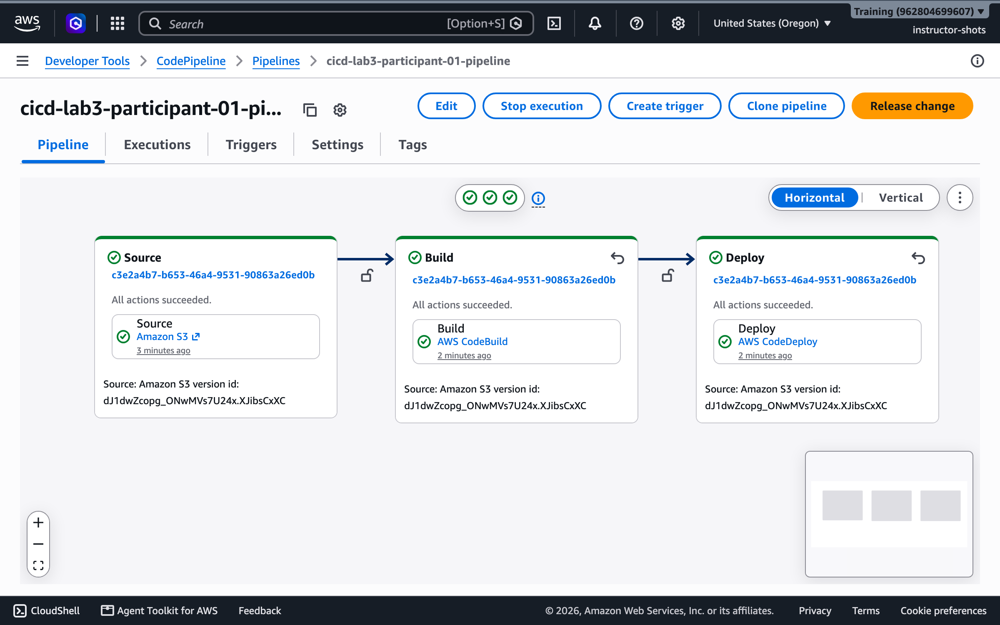
Open http://<your instance public IP>/.
That is Apache's test page. Every stage of your pipeline is green and the result is wrong. This is the most important stop in the lab.
Investigate: The pipeline did exactly what it was told. So what was it told? What files did the deployment actually put on the server?
💡 Hint 1 — look at the server
Session Manager → ls -la /var/www/html/:
appspec.yml
scripts/
No index.html. Apache shows its test page when there is nothing to serve. CodeDeploy copied everything that was in the artifact. So what was in the artifact?
💡 Hint 2 — look at the build log
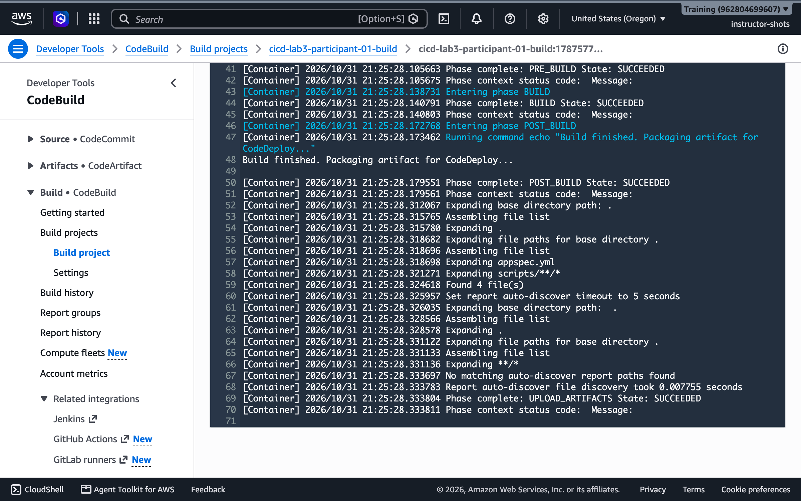
Expanding appspec.yml
Expanding scripts/**/*
Found 4 file(s)
Four files: appspec.yml and three scripts. The file the whole build exists to produce – the freshly stamped index.html – was never packed. Where is the list of files that get packed?
✅ Solution
In buildspec.yml, the artifacts section forgot the page:
artifacts:
files:
- appspec.yml
- index.html
- scripts/**/*
Re-zip, upload, wait. Then refresh the page:
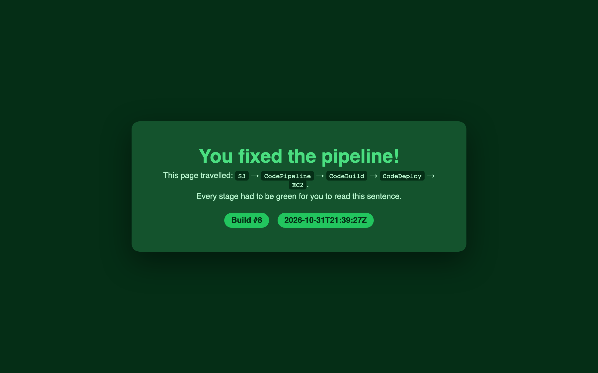
Bug 6 — green is not correct. Each stage verified its own contract: the build ran without error, the deployment copied every file it was given. Nobody verified the outcome. Prevention: make the pipeline check the outcome – a ValidateService hook that fetches the page and looks for a sentence, a build step that fails if the artifact lacks a required file, or a synthetic monitor. Challenge A makes you add one.
🏁 Victory lap
Execution history tells the story of your afternoon: every run, its trigger (PollForSourceChanges when you uploaded, Retry when you retried) and how far it got.
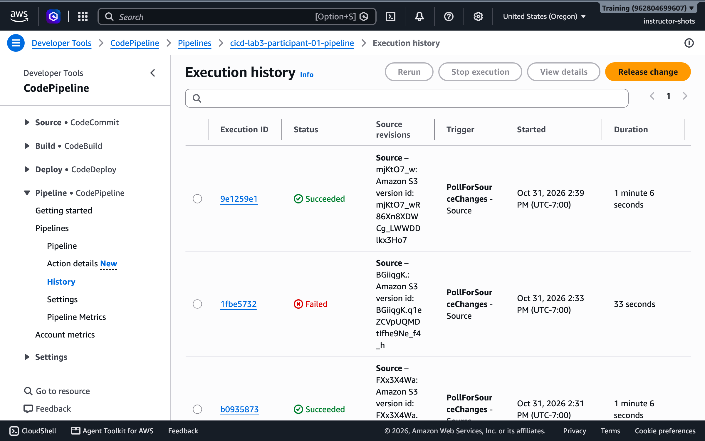
CodeDeploy → Deployments shows the same story from the server's point of view.
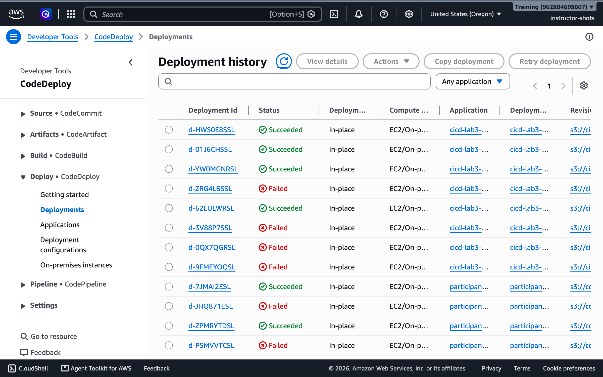
Your bucket now holds the pristine source, your fixed uploads (as versions of the same key) and every intermediate artifact the pipeline produced. Nothing was overwritten; everything is traceable.
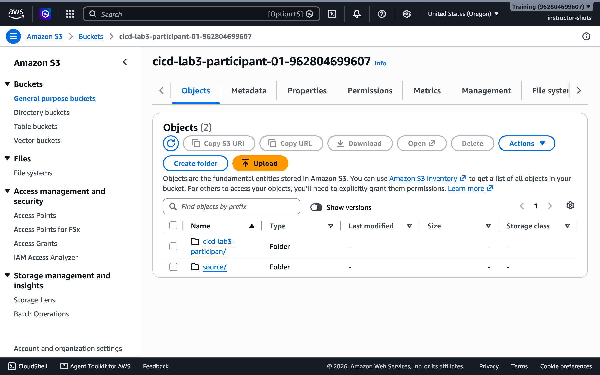
Upload the zip once more without changing anything. The build number on the page goes up by one. Every run re-stamps the artifact; the artifact tells you where it came from.
Debrief · fill in the tracker, then answer these
Answer key for the tracker (open only when you are done)
| # | Symptom | Robot / file | Root cause | Fix |
|---|---|---|---|---|
| 1 | Build red · BUILD phase · grep -q "Build unexpected EOF |
buildspec.yml |
# starts a YAML comment; command truncated |
quote the command |
| 2 | Build red · UPLOAD_ARTIFACTS · AccessDenied s3:PutObject |
CodeBuild role | role can read but not write the bucket | add s3:PutObject |
| 3 | Deploy red in seconds · "no instances were found" | deployment group | tag filter …-server, instance is …-web |
fix the filter value |
| 4 | Deploy red · DownloadBundle · AccessDenied s3:GetObjectVersion |
EC2 instance role | no S3 read permission for the agent | attach AmazonEC2RoleforAWSCodeDeploy |
| 5 | Deploy red · ApplicationStart · Unit htpd.service not found |
scripts/start_server.sh |
typo htpd |
httpd |
| 6 | All green · Apache test page | buildspec.yml artifacts.files |
index.html not in the artifact |
add it |
- Order. The bugs revealed themselves in a fixed order (build → build permissions → find servers → fetch → run → verify). Why could you not have found bug 5 before bug 4?
- Cost of each. Which bug would have been cheapest to catch before the pipeline existed, and with what tool? (Think: a YAML linter, an IAM policy simulator, Terraform producing both the tag and the filter, a test instance, a smoke test.)
- Blast radius. Which bug left the website down while being green somewhere else? Which left it up but wrong? Which is worse for a real business?
- Three robots. Two bugs were AccessDenied. Without looking, which robot was each? How did you tell them apart in the message?
- The sentence. Write the general shape of every AWS permission error in one line.
Challenges
Challenge A · Make the pipeline catch bug 6 by itself
Add a ValidateService hook that fails the deployment unless the live page contains the words Pipeline Repair Shop. Then prove it works by removing index.html from the artifact again and watching Deploy go red instead of silently shipping the wrong page.
💡 Hint
Lab 2, Challenge C. Script: curl -sf http://localhost/ | grep -q "Pipeline Repair Shop". Register it under hooks: ValidateService: in appspec.yml. Give Apache a second to start. The script must be in the artifact (it is: scripts/**/*).
✅ Solution
scripts/validate_service.sh:
#!/bin/bash
set -e
sleep 2
curl -sf http://localhost/ | grep -q "Pipeline Repair Shop"
echo "Smoke test passed"
appspec.yml, under hooks::
ValidateService:
- location: scripts/validate_service.sh
timeout: 60
runas: root
Make it executable before zipping (chmod +x scripts/*.sh). Deploy once (green, ValidateService takes ~2 s). Then remove - index.html from artifacts.files, upload, and watch Deploy fail at ValidateService with your script's exit code. Put the line back.
With this hook in place, bug 6 would have been impossible to miss.
Challenge B · Least privilege for the agent
In Stop 4 you attached an AWS-managed policy that lets the instance read every bucket in the account. Replace it with an inline policy that allows only s3:GetObject and s3:GetObjectVersion on objects in your bucket, remove the managed policy, and prove deployments still work.
💡 Hint
IAM → the ec2 role → Add permissions → Create inline policy → JSON. Resource ARNs for objects end in /*. The agent also needs s3:GetBucketLocation on the bucket itself for some regions; include it on the bucket ARN. Then remove AmazonEC2RoleforAWSCodeDeploy and Release change.
✅ Solution
{
"Version": "2012-10-17",
"Statement": [
{
"Effect": "Allow",
"Action": ["s3:GetObject", "s3:GetObjectVersion"],
"Resource": "arn:aws:s3:::cicd-lab3-participant-NN-962804699607/*"
},
{
"Effect": "Allow",
"Action": ["s3:GetBucketLocation", "s3:ListBucket"],
"Resource": "arn:aws:s3:::cicd-lab3-participant-NN-962804699607"
}
]
}
The deployment still succeeds, and this instance can no longer read anyone else's bucket. (Students in this account cannot detach managed policies themselves – ask the instructor to detach it, or simply confirm the inline policy alone would suffice by reading both.)
Why it matters: a compromised web server with AmazonS3ReadOnlyAccess can read every backup, every log, every other student's artifacts. Least privilege turns a breach into a nuisance.
Challenge C · Sabotage a friend (pair exercise)
Pick one of the six bugs and re-plant it in your own environment (for example, put the htpd typo back and upload, or change your tag filter). Swap seats with a neighbour. Diagnose each other's pipeline using only the triage playbook, no hints. Time yourselves. Then put everything back.
💡 Facilitator note
Good sabotage candidates: the tag filter (fast feedback), the script typo, removing index.html from the artifact (the sneaky one). Avoid IAM changes unless you are confident you can revert them – students cannot detach policies in this account.
Challenge D (stretch) · Two servers, one deployment, and a gate that was missing
You did a two-server, one-at-a-time rollout in Lab 2 (Part 10). Do it again here, on the pipeline you just repaired, and add the piece this pipeline never had:
- Launch a second EC2 instance exactly like the first (same AMI, same IAM instance profile
cicd-lab3-participant-NN-ec2-profile, same user-data script from Lab 2, same Name tag). Release a change: the deployment's instance list now shows two instances. - Switch the deployment group to
CodeDeployDefault.OneAtATimeand release again. Watch the order and timing. - Now the new part: this pipeline's Build stage only stamps the page. Borrow the two checks from Lab 2's
buildspec.yml(syntax-check every script withbash -n; fail ifappspec.ymlnames a script that is not in the bundle) and add them to this buildspec. Re-plant bug 5 (htpd): does the gate catch it? Re-plant a wrong script name inappspec.yml: does it catch that? Explain the difference in one sentence.
Terminate the extra instance when you are done.
Clean up
Nothing to delete. The instructor tears all fifteen environments down with one Terraform command. Please do not delete your resources yourself; it confuses the teardown.
What you learned
- A triage order: where is it red → which robot was acting → what does the message say (principal, action, resource) → which file/setting owns that.
- Six families of failure: config-file syntax (YAML), build permissions, target selection (tags), target permissions, deployment scripts, and artifact contents.
- Green ≠ correct. Pipelines verify contracts between stages, not outcomes. Outcomes need explicit checks (
ValidateService, smoke tests, monitors). - Fix one thing at a time and let the pipeline tell you what is next. It always does.
- Least privilege is a habit: fix the missing verb, not "give it everything".